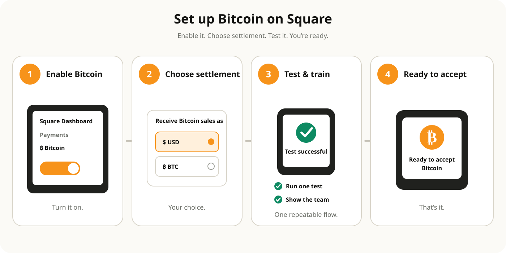

Square Bitcoin setup guide
A practical retail checklist for going from “interested” to a controlled, trainable Bitcoin checkout experience.

Before you start
- Confirm your business and location are eligible in Square Dashboard.
- Confirm the relevant business location is in the United States and not in an excluded jurisdiction.
- Decide whether you want Bitcoin payments settled in dollars or held as Bitcoin.
- Know the current point-of-sale and invoice transaction limits.
- Decide which team members need permission and training.
Step 1: Open the Bitcoin area in Square Dashboard
Square says eligible businesses will see the option to get started in the Bitcoin section of Dashboard. Eligibility is automatic; a business that is not currently eligible cannot manually override that decision.
Step 2: Choose your settlement posture
For many first-time merchants, dollar settlement is the simplest operational test because it separates the question “should we accept Bitcoin?” from the separate treasury question “should we hold Bitcoin?”
Step 3: Confirm your checkout hardware
If you want buyer-initiated selection and NFC tap, you need Square Register (2nd generation). If QR-based seller-initiated checkout meets your needs, do not buy new hardware solely because Bitcoin sounds new.
Step 4: Train the staff on one repeatable script
- Ring up the sale normally.
- Select Bitcoin when the customer requests it.
- Present the QR code or supported NFC flow.
- Wait for Square confirmation.
- Issue the receipt.
- For a refund request, follow the Square Bitcoin refund process rather than attempting a card-style reversal.
Step 5: Test before promoting it
Run a small live transaction with a compatible wallet. Confirm the receipt, reporting entry, settlement behavior and staff understanding.
Step 6: Add simple customer signage
Use straightforward language such as “Bitcoin accepted here with Square.” Avoid promising instant settlement or universal wallet compatibility.
Step 7: Review after 30 days
Measure usage, average ticket, staff friction, refund frequency and effective processing cost. Keep the feature because it earns its place, not because it is interesting.
New to Square?
If the broader Square platform fits your business, Bitcoin acceptance becomes one feature inside the system rather than the only reason to choose it.
Explore Square →